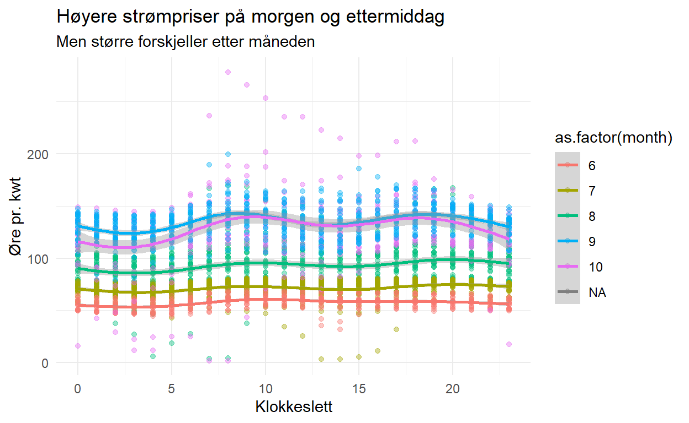
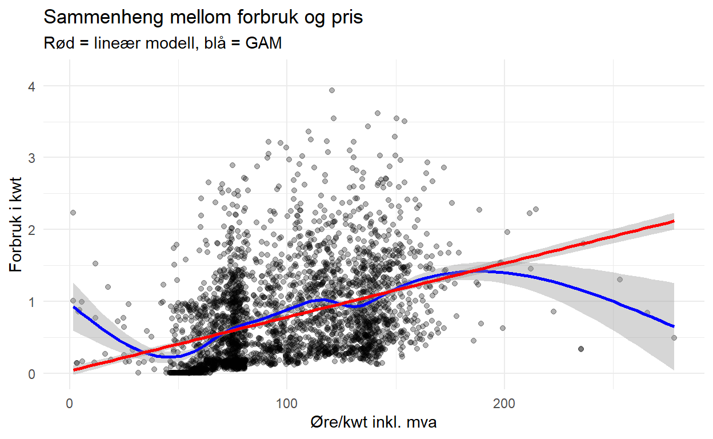
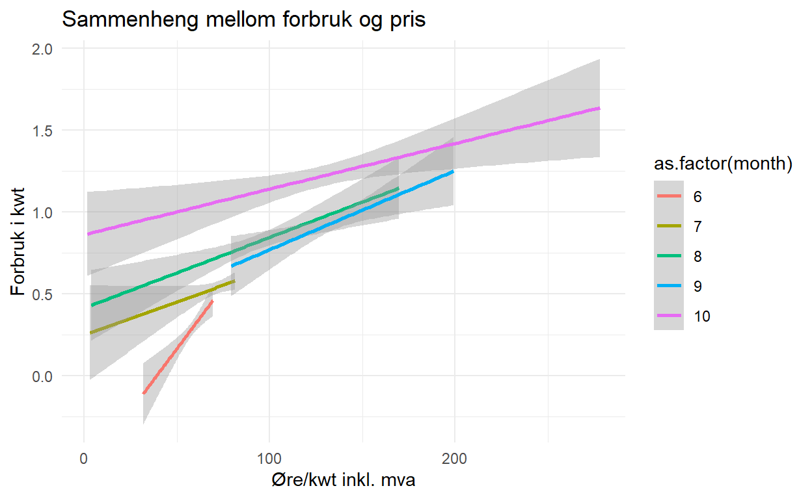
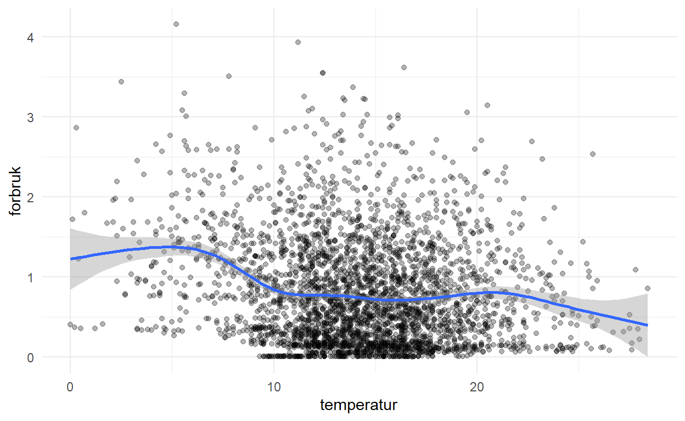

Når prisen går opp, går forbruket ned - det var en ganske grunnleggende ting jeg lærte i samfunnsøkonomien. Prisen på strøm har uten tvil gått veldig opp, så hvordan er sammenhengen mellom pris og forbruk hos meg?
Før jeg i det hele tatt begynner å se på dataene, vil jeg tippe på at svaret er nei, av flere grunner:
- mitt forbruk gir ikke så veldig mye data å gå på.
- de dataene jeg har, er fra perioden fra mai til november. Selv her ved kysten vil vi naturlig nok bruke mer strøm når været blir kaldere.
- bakgrunnen for at etterspørselen går ned når prisen går opp, er generelt sett at forbrukeren vil bytte til en anna vare eller tjeneste når prisen går opp (substitusjon), og at mindre av inntekten vil være tilgjengelig for å kjøpe varen. Det er ikke helt feil i dette tilfellet - jeg har sett på strømleverandører, brukt varmepumpa mer og kjøpt inn litt ved. Men det er vanskelig å bytte seg helt bort fra strøm til spotpris. Jeg antar altså at etterspørselen er lite elastisk.
Men når det er sagt - la oss ta en kikk. For å komme til bunns i dette starter jeg med å hente forbruksdataene for målepunktet fra elhub.no.
#data
files= list.files(path = "data", pattern = "*.csv", full.names = TRUE)
df = map_df(files, read_delim, delim = ",", escape_double = FALSE,
skip = 1,
col_names = c("fra", "til", "forbruk"),
col_types = cols(
fra = col_datetime(format = "%d.%m.%Y %H:%M"),
til = col_datetime(format = "%d.%m.%Y %H:%M")
),
locale = locale(decimal_mark = ",", grouping_mark = ""),
trim_ws = TRUE)
#tester om det finnes duplikater her
duplikater = get_dupes(df, fra, til)
rm(duplikater, files)
#legger til informasjon om datoer
df = mutate(df,
dato = as.Date(fra),
time = lubridate::hour(fra),
dag = lubridate::wday(fra, label = TRUE, abbr = FALSE),
ukedag = ifelse(dag %in% c("lørdag", "søndag"), "helg", "arbeidsdag"),
uke = lubridate::week(fra),
month = lubridate::month(fra),
natt = ifelse(time %in% c(23, 00, 01, 02, 03, 04, 05), "natt", "dag")
)For å finne strømprisene gjør jeg følgende:
- jeg laster ned strømprisene fra Nord Pools nettside.
- prisene her oppgis i NOK pr megawatt-time. En vanligere enhet for strømpriser er øre per kilowatt-time. 1 megawatt er 1 000 kilowatt og 1 krone er 100 øre - altså må vi dele den oppgitte prisen på 10 for å få øre per kilowatt-time.
- gjennom min strømavtale får jeg et avslag på 0,5 øre per kwt.
- Nordpool-prisene er også oppgitt uten merverdiavgift. Mva. på strøm er 25 %.
Slik jeg har forstått det, er strømavtalen min nå uten andre påslag. Nettarriffen kommer utenom (både fastledd og energiledd) i nettleia. Jeg antar også at forbruksavgifter og innskudd til energifond i Enova kommer i nettleia.
#leser inn datasettet, endrer et variabelnavn, velger bare Bergen, lager nye fra-til-variabler for klokkeslett, og nye variabler med dato og klokkeslett på samme format som i forbruksdatasettet
priser_2021 <- read_excel("data/elspot-prices_2021_hourly_nok.xlsx", skip = 2) %>%
rename(., dato = 1) %>%
select(dato, Hours, Bergen) %>%
separate(Hours, into = c("fra_kl", "til_kl")) %>%
mutate(fra_kl = paste0(fra_kl, ":00:00"),
til_kl = paste0(til_kl, ":00:00"),
fra = as.POSIXct(paste0(dato, " ", fra_kl), format = "%Y-%m-%d %H:%M:%S", tz = "UTC"),
til = as.POSIXct(paste0(dato, " ", til_kl), format = "%Y-%m-%d %H:%M:%S", tz = "UTC"),
) %>%
mutate(spotpris_nordpool = Bergen/1000*100,
spotpris_eks_fratrekk = spotpris_nordpool -0.5,
spotpris_inkl_mva = spotpris_eks_fratrekk * 1.25
)En liten kontroll mot strømregninga viser at prisene blir nokenlunde riktige. Ikke helt på øret - men heller ikke helt galematias.
| month | forbruk | kostnad_kr | snitt_øre_pr_kwh |
|---|---|---|---|
| 6 | 106.981 | 63.53 | 59.38 |
| 7 | 400.326 | 288.25 | 72.00 |
| 8 | 606.058 | 574.79 | 94.84 |
| 9 | 675.780 | 918.42 | 135.91 |
| 10 | 789.004 | NA | NA |
| NA | NA | NA | NA |
Høyere priser i kaldere måneder og på hjemme-tidspunkt

Bruker mer strøm når prisene går opp
Figuren under viser at forbruket mitt så langt i hovedsak har gått opp, når prisene har gått opp.

Med en lineær regresjon finner vi en sammenheng mellom pris og forbruk - men temmelig svak: for hvert øre prisen øker, går forbruket opp med 7 watt. Det er ikke mye. Som vi så av figuren over, har gjennomsnittlig døgnpris gått opp fra rundt 100 ør pr. kwt til 140 øre pr kwt fra starten av september til starten av oktober. 40 øres økning samsvarer da med en økning i forbruket på 280 watt pr. time (0,3 kwt).
Hvis jeg lager separate lineære regresjonslinjer for de ulike månedene (med en tanke om at værforholdene er nokenlunde like innenfor hver måned), får jeg mye det samme bildet: høyere forbruk henger sammen med høyere priser.

I juli er forbruket i en gitt time 0.2 kwt høyere i utgangspunktet, i oktober 0,7 kwt høyere.
For å få et grep om hvordan forbruket responderer på prisendringer, kunne jeg sett på samfunnsøkonomenes elastisitet: Priselastisitet er et mye brukt mål i samfunnsøkonomien på sammenhengen mellom pris og etterspørsel. Dette målet setter opp hvor stor prosentvis endring i etterspørsel man får av å gjøre en prosentvis endring i prisen. En elastisitet på mindre enn -1 - altså at etterspørselen synker med mer enn 1 % hvis prisen øker med 1 % - beskrives som en elastisk etterspørsel, mens en elastisitet større enn -1 beskrives som “uelastisk”.
Ettersom elastisiteter først og fremst er nyttige når en skal sammenlikne ulike varer (noe vi ikke skal), og når etterspørselen er synkende med økt pris (noe den ikke er), lar jeg dette ligge her.
Temperaturdata inn i modellen
Så langt har jeg bare sagt “etterspørselen følger i stor grad temperaturen”, uten å ha modellert eller testet dette eksplisitt. Men ved hjelp av data fra Meteorologisk institutt (MET) sin portal seklima.met.no kan jeg nå få til dette. Her fant jeg noen temperatur-data fra målestasjonen Flordia i Bergen:
temperatur <- read_delim("data/met_temperatur_florida_010521_131121.csv",
delim = ";",
escape_double = FALSE,
col_types = cols(`Tid(norsk normaltid)` = col_datetime(format = "%d.%m.%Y %H:%M")),
locale = locale(decimal_mark = ",", grouping_mark = "|", encoding = "ISO-8859-1"),
trim_ws = TRUE) %>%
rename(tid = 3) %>%
filter(Stasjon == "SN50540") #beholder Florida 12moh, ikke Uib 45 moh
ggplot(data = temperatur, aes(x = tid, y = Lufttemperatur)) +
geom_point(alpha = 0.1) +
geom_smooth() +
labs(title = "Lufttemperatur i Bergen", subtitle = "1. mai 2021 - 13. november 2021, pr. time")temp = left_join(df, select(priser_2021, fra, spotpris_inkl_mva), by = "fra") %>%
left_join(., select(temperatur, tid, temperatur = Lufttemperatur), by = c("fra" = "tid"))
ggplot(data = temp, aes(x = temperatur, y = forbruk)) +
geom_point(alpha = 0.3) +
geom_smooth()
En litt større modell
Hva skjer så hvis vi prøver å lage en litt større modell med det vi så langt har plukka opp?
Timesforbruket bestemmes av:
- Tid på døgnet. Forbruket er lavere om natta.
- Om det er hverdag eller helg. Dagforbruket er noe høyere i helgene.
- Hvilken måned det er. Temperaturstyring fungerer i stor grad slik at en ser på kalenderen, og skrur på varmen - ikke gradstokken.
- Temperatur kan imidlertid ha en separat effekt - flere termostater slår seg på.
- Prisen?
modell_3 = lm(data = temp, forbruk ~ as.factor(natt) + as.factor(ukedag) + as.factor(month) + temperatur + spotpris_inkl_mva)
summary(modell_3)
Call:
lm(formula = forbruk ~ as.factor(natt) + as.factor(ukedag) +
as.factor(month) + temperatur + spotpris_inkl_mva, data = temp)
Residuals:
Min 1Q Median 3Q Max
-1.1237 -0.3983 -0.1156 0.3253 2.8576
Coefficients:
Estimate Std. Error t value
(Intercept) 0.4391698 0.0728150 6.031
as.factor(natt)natt -0.4742466 0.0245904 -19.286
as.factor(ukedag)helg 0.0200183 0.0225853 0.886
as.factor(month)7 0.2596038 0.0368255 7.050
as.factor(month)8 0.5037801 0.0408215 12.341
as.factor(month)9 0.5759714 0.0572954 10.053
as.factor(month)10 0.8390330 0.0570917 14.696
temperatur -0.0059354 0.0033151 -1.790
spotpris_inkl_mva 0.0010346 0.0005907 1.752
Pr(>|t|)
(Intercept) 0.00000000182089 ***
as.factor(natt)natt < 0.0000000000000002 ***
as.factor(ukedag)helg 0.3755
as.factor(month)7 0.00000000000221 ***
as.factor(month)8 < 0.0000000000000002 ***
as.factor(month)9 < 0.0000000000000002 ***
as.factor(month)10 < 0.0000000000000002 ***
temperatur 0.0735 .
spotpris_inkl_mva 0.0800 .
---
Signif. codes: 0 '***' 0.001 '**' 0.01 '*' 0.05 '.' 0.1 ' ' 1
Residual standard error: 0.5493 on 3063 degrees of freedom
(9591 observations deleted due to missingness)
Multiple R-squared: 0.2979, Adjusted R-squared: 0.2961
F-statistic: 162.5 on 8 and 3063 DF, p-value: < 0.00000000000000022- Hvis en time er på natta, er forbruket en halv kilowatt-time lavere enn på dagen.
- Hvorvidt forbruket er i helga eller ikke, har ingenting systematisk å si i seg selv. Det var en effekt her, men den forsvant når vi introduserte månedene - så forbruket som så ut til å være høyere på grunn av helger, var heller på grunn av måneder.
- Månedene har en del å si. Alle har høyere forbruk enn i juni, gradvis større og større.
- Effekten av temperatur og spotpris_inkl_mva forsvinner når en introduserer månedsvariablene.